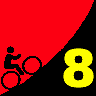

|  |
2009 Low-Key Hillclimbs Week 8: Alba Road 21 Nov 2009 |
| Aerial photo of Alba Road, courtesy of Stanford Cycling |
Alba. For years we've resisted Alba, one of the most challenging climbs in the Bay area, and the site of a classic NorCal hillclimb. Unlike some others which may have steep sections, Alba comes at you over and over. The road rises upward ahead, a dip into lactic hell... then delicious relief. But way too quickly, it mercilessly rises upward again. And again. And again.
In other words, very Low-Key.
So why the long wait? Alba empties into Highway 9, which has way too much traffic, making staging difficult. We're going to run the climb today as an individual time trial, with riders starting one by one. This should minimize the number of people who need to congregate at the bottom any any one time. We'll be experimenting with a "flexible start time" approach to keep things moving smoothly: you show, you go, we record your start time.
So wait no longer. The time is now. Alba is ready.
By the way, the winner of that classic hillclimb? The great Tom Ritchey: 23:51. Can you beat his time? Or even better, from Harlan Chapman's 22:58 from 1980? (Thanks to Shin Umeda for the NCNCA Newsletter scan!)
Our insurance demands it: helmets are required. Sorry kids, no exceptions!
USA Cycling rules do not allow ear plugs. We don't think it's a good idea either. So for safety sake, please leave both ears open during all Low-Key events!
Trailers pulling boom boxes are fine, however.
We'll meet for registration at Ben Lomond County Park, on Mill Street in Ben Lomond. Parking is limited. This is a small town, please find street parking; respect the local businesses and do not park in their lots.
We'll send off small groups to the base of the climb, similar to what we did at OLH this year. Riders will go east on Mill St to make a left onto 9. There's a traffic light there, so please be courteous. Once at the base of Alba our friendly volunteers will get rider names and numbers, assign you a starting time, and send you happily on your way.
Okay, maybe not so happily...
From Santa Cruz, try the 35A bus to Boulder Creek.
| stats | 3.75 miles, 2065 feet, 10.4% |
| format | small groups |
| time | reg 9:15 - 10:00 start 10:10am |
| coordinator | |
| aerial view | Stanford Cycling |
| route profile | Motionbased profile |
| weather | Weather Underground Weather Bonk |
| registration form |
PDF release form |
| entry fee | $10 voluntary donation free for juniors 2 free for volunteers free for coordinators |
{kind=link}
{kind=link}
{kind=link}
{kind=link}